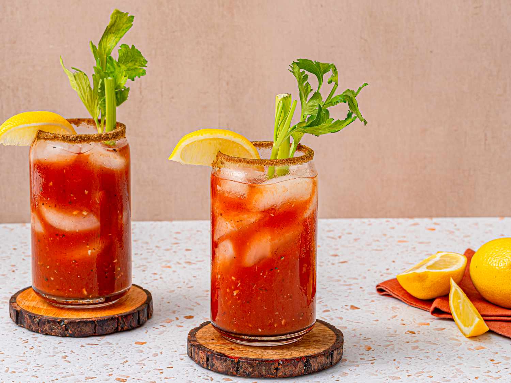

Believed to have originated during the prohibition era in New York City (some say in the original Harry's New York Bar), Bloody Mary is made with a combination of vodka, tomato juice, lemon juice, Worcestershire sauce, tabasco, celery salt, and pepper. With numerous spicy sauces used in its preparation, Bloody Mary has gained a reputation of a great hangover cure and, being a restorative beverage, it is even recommended to drink it in the morning.
Meal prep time : 5 minutes
Servings : 1